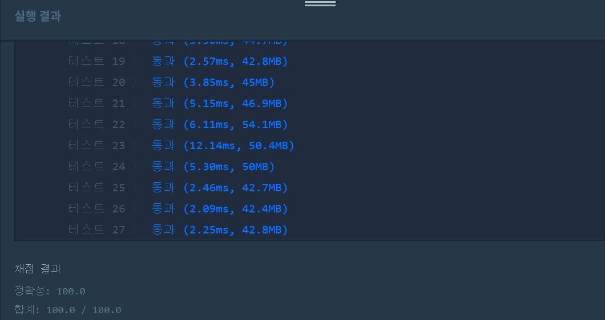

👀 문제
https://programmers.co.kr/learn/courses/30/lessons/42889
👊 도전
1. 설계
- 스테이지별 클리어하지 못한 사람 수를 계산한다.
- 스테이지별 실패율을 계산한다.
- 스테이지 단계와 실패율을 가지는 클래스를 생성, 조건에 맞게 내림차순 정렬한다.
- answer에 스테이지 번호를 옮겨 담아 리턴한다.
2. 구현 (성공 코드)
1
2
3
4
5
6
7
8
9
10
11
12
13
14
15
16
17
18
19
20
21
22
23
24
25
26
27
28
29
30
31
32
33
34
35
36
37
38
39
40
41
42
43
44
45
46
47
48
49
50
51
52
53
import java.util.*;
/**
*
* @author HEESOO
*
*/
class Stage{
int stage;
double lose;
public Stage(int s, double l){
this.stage=s;
this.lose=l;
}
}
class Solution {
public int[] solution(int N, int[] stages) {
int[] answer = {};
answer=new int[N];
int player=stages.length;
int[] notClear=new int[N+2];
for(int i=0;i<stages.length;i++){
notClear[stages[i]]++;
}
double[] loseRate=new double[N+2];
for(int i=1;i<notClear.length;i++){
if(player==0)
loseRate[i]=0;
else
loseRate[i]=(double)notClear[i]/player;
player-=notClear[i];
}
Stage[] stage=new Stage[N];
for(int i=0;i<stage.length;i++){
stage[i]=new Stage(i+1, loseRate[i+1]);
}
Arrays.sort(stage, new Comparator<Stage>(){
@Override
public int compare(Stage s1, Stage s2){
if(s1.lose==s2.lose)
return 0;
else if(s1.lose>s2.lose)
return -1;
else
return 1;
}
});
for(int i=0;i<answer.length;i++){
answer[i]=stage[i].stage;
}
return answer;
}
}
3. 결과
 🤟 성공 🤟
4. 설명
- 스테이지별 클리어하지 못한 수를 구한다.
- notClear 배열을 생성하여 인덱스를 스테이지 번호로 생각하여 스테이지별 클리어하짐 못한 사람 수를 저장한다.
- 인덱스 0은 사용하지 않고, 스테이지를 모두 클리어하면 N+1의 값을 가지므로 N+2의 크기가 필요하다.
- 실패율을 계산한다.
- loseRate 배열을 생성하고, 인덱스를 스테이지 번호로 생각하여 각 스테이지별 실패율을 계산해 저장한다.
- 이때 실패율은 소수점이 발생하므로 double형 배열에 넣어야한다.
- player가 0인 경우 클리어 못한 사람 수/0이므로 NaN이 발생한다(분모가 0은 수학적 오류임). 따라서 이 경우는 나눗셈 연산을 하지 않고 if문으로 따로 빼주어 loseRate[i]에 0을 넣는다.
- Stage 클래스를 생성하여 내림차순 정렬한다.
- Stage 클래스는 스테이지 번호 stage와 실패율 lose를 가진다.
- 클래스를 생성하여 내림차순으로 정렬하는 까닭은, 실패율으로 우선순위를 부여하되 배열에 저장하는 값은 스테이지 번호여야 되기 때문이다.
- 이에 따른 정렬은 Comparator을 이용한다.
- 실패율이 같다면 스테이지 번호가 작은 순이 먼저 오도록 해야하므로 0을 리턴한다. 0을 리턴한다는 뜻은 자리 이동이 일어나지 않는다는 뜻인데, 이렇게 해도 문제가 없는 이유는 애초에 비교하는 s1과 s2의 스테이지 번호는 s1이 s2보다 항상 작기 때문이다. 애초에 배열 stage에 스테이지 번호 순으로 1번부터 N까지 차례대로 넣으므로 s1의 스테이지 번호 값이 s2보다 작다는 것이 보장된다.
- s1의 실패율이 더 크다면 -1을 리턴하여 s1이 앞으로 가게 한다.
- s2의 실패율이 더 크다면 1을 리턴해 s1이 뒤로 가게 한다.
- 정렬된 stage의 스테이지 번호를 answer에 옮겨 담아 리턴한다.
- answer에는 내림차순으로 정렬된 스테이지 번호를 리턴하면 되므로 배열 stage의 stage값을 answer에 옮겨 담는다.
👏 해결 완료!
문제 자체는 어렵지 않았지만 for문을 생각보다 많이 사용하여 코드가 효율적이라는 생각은 들지 않는다. 또한 내림차순으로 정렬할 때 클래스를 생성하지 않고 할 수 있는 방법이 있을까 고민했었는데, 다른 사람들도 모두 클래스를 사용한 걸 보아 이게 최선인 것 같다.